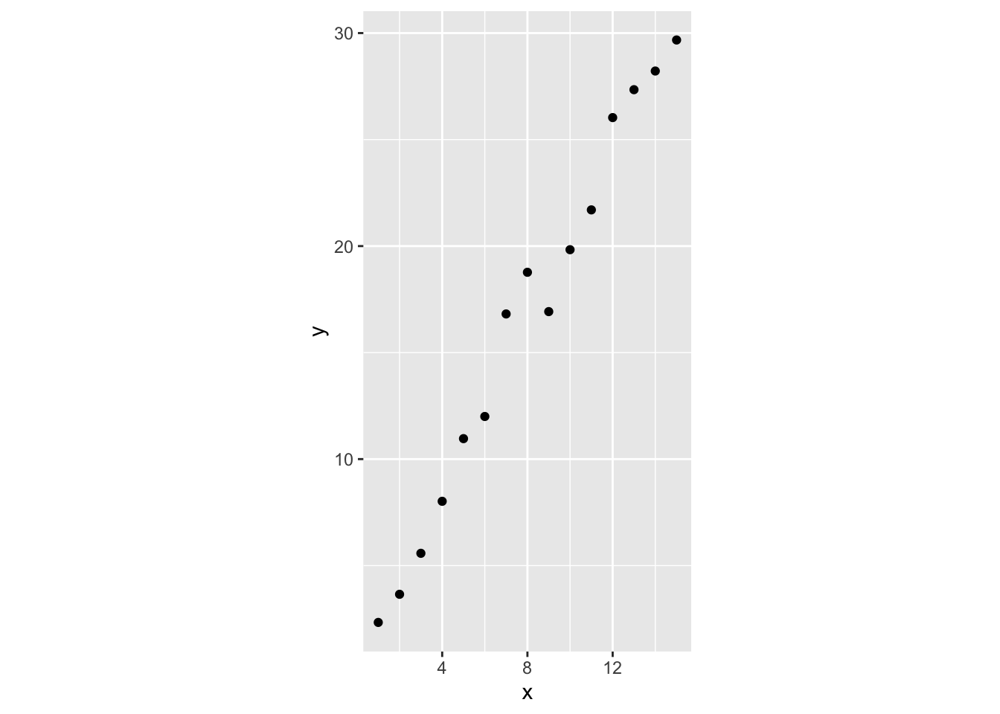
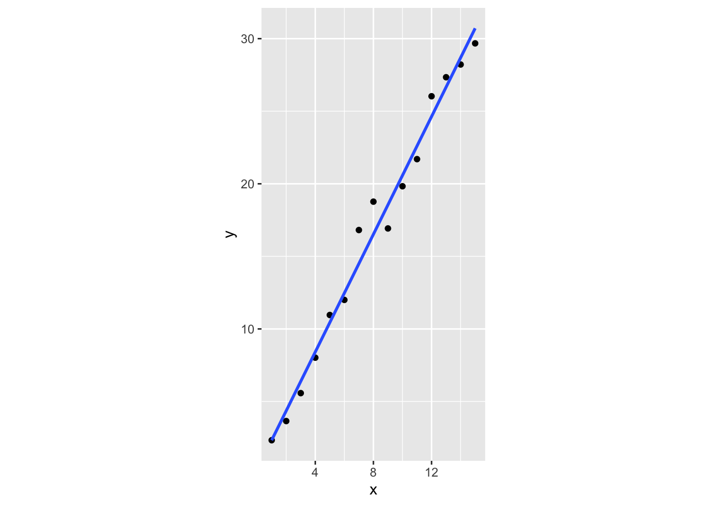
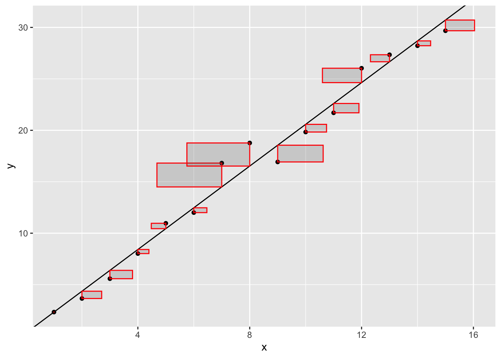
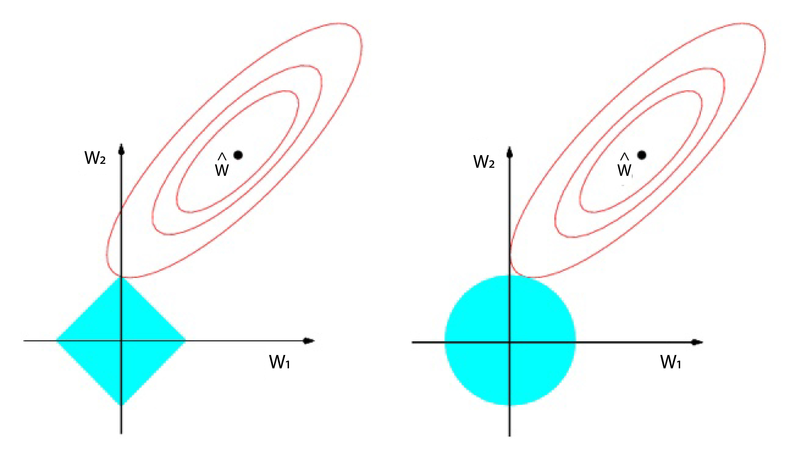

Introducción
La regresión lineal puede parecer algo muy simple, pero en realidad tiene un alcance muy grande para modelar datos. Puede verse desde una perspectiva meramente geométrica, sin embargo, tiene unos supuestos estadísticos que son sumamente importantes que se cumplan si queremos que el modelo funcione y sea aplicable.
En este post, quiero enfocarme en la regresión lineal desde la perspectiva del machine learning, por lo que asume un conocimiento básico previo de éste. Cubrirá los siguientes puntos:
- Qué es la regresión lineal en una y varias variables
- Qué significa que la regresión lineal se puede aplicar mientras se tenga linealidad en los parámetros
- Supuestos para la validez de la regresión lineal
- Cómo se define la función de costo para la regresión lineal
- Diferencia entre la solución cerrada para minimizar la función de costo y el método del gradiente descendiente
- Métodos de regularización para regresión lineal y su interpretación geométrica
Sin más por comentar en la introducción, comencemos con el post.
Regresión
La regresión es una técnica de modelación proveniente de la estadística para modelar y analizar la relación entre variables. Se tiene una variable \(y\) llamada independiente, la cual se modela en función de otra variable \(x\) llamada independiente, que bien se puede tener una \(n\) cantidad de variables \(x_1, x_2, ... , x_n\) como se verá más adelante.
Es importante mencionar que, para evitar confusiones con la noción de indepencia de probabilidad, se prefiere nombrar a \(y\) como la variable respuesta y a \(x\) como las variables predictoras. En el contexto de machine learning, a las variables \(x\) se les denomina características (features) y a \(y\) etiquetas (labels).
El tipo de datos con los que la regresión trabaja son numéricos (flotantes), y vienen en duplas \((x_1, y_1), ... , (x_m, y_m)\), donde \(m\) es la cantidad de datos que tengamos, es decir, cardinalidad del conjunto de datos. Nótese que se pueden tener múltiples características \(x\).
Para trabajar con regresión, si la dimensión lo permite, suele hacerse un diagrama de dispersión que es una gráfica de los datos representados como puntos. Por ejemplo, consideremos de \(x\) e \(y\), con 15 registros (\(m = 15\)), resultando el siguiente diagrama de dispersión
En este caso, se ve claramente que los puntos tienen una tendencia lineal, esto es, que se les puede ajustar una recta para modelarlos con un error considerablemente bajo. La ecuación de la recta, es \(y = ax + b\), con \(a\) la pendiente y \(b\) la intersección en el eje \(y\). Dicha ecuación discribiría adecuadamente ese comportamiento, en las siguientes secciones veremos cómo ajustarla a los datos para encontrar los valores adecuados de \(a\) y \(b\).
En este diagrama en partícular, los puntos fueron simulados de una recta \(y = 2x\), a la que se les agregó un error \(\varepsilon\) que tiene una distribución normal con media \(\mu = 0\) y desviación estandar \(\sigma = 1.5\). Teniendo así los parámetros de la recta \(a = 2\) y \(b = 0\)
Obtención de datos para regresión
Hay 3 maneras principales para obtener datos que puedan usarse en regresión, los cuales se listan a continuación
- Estudio retrospectivo: Aquí se tienen datos que ya fueron capturados en el pasado, y no necesariamente con una intención de ser analizados científicamente, por lo que pueden no estar en la forma más ideal posible. Los datos y sus resultados ya se tienen, no se puede intervenir ni cambiar nada para mejorar la toma de datos. Este tipo de estudio es muy común en machine learning y big data, donde obtienes datos con ciertas características y ya etiquetados que fueron obtenidos en el pasado.
- Estudio observacional: Como su nombre puede indicarlo, en este tipo de estudio solamente se observa el proceso o experimento que quiere analizarse, interviniendo mínimamente solamente para la captura de los datos. Por temas éticos, este estudio es muy usado en el área médica, pues de lo contrario se estaría imponiendo sobre las personas las condiciones que deben tener (como empezar a fumar, por ejemplo).
- Diseño experimental: Este tipo de estudio posee más estrategia. Aquí se manipulan las variables predictoras (o características) de acuerdo a un diseño experimental, para tener ciertos valores y observar su efecto en la variable respuesta.
Regresión Lineal Simple
La regresión lineal simple es útil cuando existe una tendencia lineal en los datos. Aunque veremos más adelante que va más allá de lo lineal. Se le llama simple porque solo hay una característica \(x\), y se modela como
\[y = w_0 + w_1 x + \varepsilon\] La cual puede verse como la ecuación de regresión lineal poblacional, no obstante, en regresión lineal trabajamos con \(m\) número de datos, entonces para cada punto se tendrá una ecuación de regresión lineal muestral
\[y_i = w_0 + w_1 x_i + \varepsilon_i \quad i=1, 2, 3, ..., m\]
Comparándo con la ecuación de la recta, podemos interpretar los parámetros. Se tiene que \(w_1\) es el cambio en la media de la distribución de \(y\) producido por un cambio de unidad en \(x\). Mientras que \(w_0\) simplemente es la media de la distribución de \(y\) cuando \(x = 0\), si el dominio de \(x\) no incluye a \(0\) entonces el parámetro \(w_0\) no tiene interpretación práctica.
Por otro lado, \(\varepsilon\) son los errores o ruido que se tiene en cada predicción de \(y\). Se asumen que dichos errores tienen una distribución normal con media igual a cero \(\mu = 0\) y una varianza desconicida \(\sigma^2\). Es importante notar que, esa varianza es la misma en todos los puntos de la regresión, lo que se conoce como homocedasticidad. A los errores \(\varepsilon\) se les llama residuales pues se definen como \(y - \hat{y}\).
Ahora bien, retomando el diagrama de dispersión que se vio anteriormente, el cual tiene proviene de la recta \(y = 2x\) con un error \(\varepsilon\) con media \(0\) y varianza \(\sigma^2 = 1.5^2\). Se le puede ajustar una recta de regresión lineal y se vería como la siguiente figura

Obteniendo los coeficientes estimados \(\hat{w_0} = 0.3045\) y \(\hat{w_1} = 2.0274\). Teniendo así una ecuación de regresión lineal con la que podemos hacer predicciones
\[ \hat{y} = 0.3045 + 2.0274 x\] Notemos que los parámetros reales de donde provienen los datos son \(0\) y \(2\), pero por la naturaleza estocástica de los errores, los estimados no coinciden con exactitud. Entre mayor sea el número de datos \(m\), los parámetros estimados serán más cercanos a los originales.
Regresión Lineal Múltiple
Para el caso en que la variable respuesta \(y\) está realcionada con \(n\) variables regresoras, se tiene el modelo de la regresión lineal múltiple
\[ y = w_0 + w_1x_1 + w_2x_2 + ... + w_nx_n + \varepsilon \] Así, a los parámetros \(w_j \quad j = 0, 1, 2, ..., n\) se les llama coeficientes de regresión. Este modelo, al ser de multivariable, describe un hiperplano en el espacio \(n\)-dimensional de las variables regresoras \(x\).
Haciendo sentido de los parámetros. El parámetro \(w_j\) representa el cambio esperado en la respuesta \(y\) por unidad de cambio en \(x_j\), cuando todo las demás variables regresoras \(x_i(i\ne j)\) se mantienen constantes.Por otra parte, el parámetro \(w_0\) es la intersección del hiperplano en \(y\), si el dominio de los datos incluye \(x_1 = x_2 = ... = x_n = 0\) entonces \(w_0\) es la media de \(y\) cuando \(x_1 = x_2 = ... = x_n = 0\); de lo contrario, \(w_0\) no tiene interpretación física.
Concluyendo, en el modelo de regresión simple y múltiple, la linealidad se tiene en los parámetros. Esto extiende más allá el concepto de linealidad aunque las variables regresoras \(x\) no sean lineales, esto se verá a continuación en la sección de regresión polinomial.
Regresión Polinomial
Ya vimos que una regresión lineal de \(n\) variables regresoras genera un hiperplano \(n\)-dimensional. Ahora bien, cualquier modelo que es lineal en los parámetros \(w\)’s es un modelo de regresión lineal, independientemente de la forma de la superficie que genere.
Como su nombre lo indica, la regresión polinomial de una variable \(x\) se define a partir de los polinomios, y se modela de la siguiente forma
\[ y = w_0 + w_1x + w_2x^2 + ... + w_nx^n + \varepsilon\] La cual es lineal en los parámetros, por lo que se puede trabajar como una regresión lineal múltiple y usar la misma metodología. Para hacer esto, podemos definir \(x_j = x^j \quad j=1, 2, 3, ... , n\). Por ejemplo, para el caso de un polinomio de grado 2 con \(y = w_0 + w_1x + w_2x^2 + \varepsilon\), tendríamos \(x_1 = x, x_2 = x^2\) y la regresión se convertiría en una lineal múltiple
\[ y = w_0 + w_1x_1 + w_2x_2 + \varepsilon\] Con este tipo de regresión, hay que ser muy cuidadosos. Ya que un polinomio de grado considerablemente alto puede apróximar muy bien una curva no lineal, sin embargo, hay que tratar de hacer transformaciones y mantener el grado lo más bajo posible para evitar un sobreajuste del modelo (empezar a generalizar el error mismo).
Supuestos de la regresión lineal
Es importante saber cuándo es prudente utilizar un modelo de regresión lineal. Para que se cumplan las condiciones de la regresión lineal simple y múltiple, se tienen los siguientes supuestos necesarios
- Linealidad: La relación entre las variables regresoras \(x\) y la variable repuesta \(y\) debe ser lineal. Notemos que en la regresión polinomial esto va más allá, necesitando solo linealidad en los parámetros.
- Homocedasticidad: Significa que la varianza de los errores es constante.
- Normalidad de los errores: Los residulales, es decir los errores, deben seguir una distribución normal con media 0 y varianza \(\sigma^2\).
- Errores independientes (no autocorrelación): Los errores no deben estar correlacionados entre ellos, es otras palabras, deben ser independientes e idénticamente distribuidos.
- No multicolinealidad: No existe correlación entre las variables regresoras.
- No exogeneidad: Las variables regresoras y los errores no están correlacionados.
Mínimos cuadrados ordinarios como función de costo
En machine learning, la base para ajustar los parámetros a nuestros datos, lo que se conoce como aprender, radica en la optimización de una función objetivo. Dicho de otra manera, es minimizar una función de costo, donde dicha función sería una medida del error en las predicciones del modelo.
En la regresión lineal no es la excepción. Es muy conocido el método de mínimos cuadrados para ajustar los parámetros, donde se define la función de costo \(J\) de mínimos cuadrados ordinarios (MCO) de la siguiente manera
\[ J(y, \hat{y}) = \frac{1}{m} \sum_{i=1}^{m} (y_i - \hat{y}_i)^2 \] Donde el factor \(\frac{1}{m}\) se multiplica como una especie de promedio en todos los datos. Algunas referencias también manejan multiplicarlo por \(\frac{1}{2}\) por conveniencia algebraica.
Notemos que la diferencia \(y_i - \hat{y}_i\) es la distancia que hay desde un punto \(\hat{y} (x_i)\) en la recta de la predicción \(\hat{y}\) hasta el correspondiente punto \(y(x_i)\) en la recta original \(y\) de donde provienen los datos. Está al cuadrado para evitar que las sumas de esos términos puedan dar cero. Así, podemos interpretarlo gráficamente como unos cuadrados en dichos puntos \(x_i\), considerando el mismo diagrama de dispersión de este post, se vería

Nótese que los ejes fueron escalados para una mejor visualización. Ahora, al ajustar los parámetros \(w\) minimizando la función de costo de MCO, lo que se está haciendo gráficamente es ajustar la recta de predicción de tal manera que se minimize el área de esos cuadrados; de ahí el nombre de este método.
Para minimizar dicha función, es mejor expresarla en término de los parámetros \(w\), para esto, en el caso de una variable regresora sustituimos \(\hat{y} = w_0 + w_1 x\) en la función de costo de MCO, así
\[ J(w_0, w_1) = \frac{1}{m} \sum_{i=1}^{m} (y_i - w_0 - w_1 x_i)^2 \] En la siguiente sección veremos cómo minimizarla, ejemplificando el caso con una sola variable regresora \(x\).
Ajuste de los parámetros minimizando la función de costo
Hay 3 maneras principales de minimizar la función de costo de mínimos cuadrados ordinarios (MCO) \(J\). El método clásico, utiliza cálculo diferencial y el criterio de las derivadas para minimizar. La segunda, utiliza el método de la máxima verosimilitud, un concepto estadístico. Se encuentra matemáticamente que ambos métodos llegan a la misma forma solución. La tercera, usa el método más utilizado en machine learning, el del gradiente descendiente (gradient descent).
Mi objetivo de este post no es hacer demostraciones matemáticas ni cálculos completos, sino que ilustrar la metodología, así que nos enfocaremos en el método clásico y el de gradiente descendiente. Veamos a más detalle
El método de mínimos cuadrados clásico
Para minimizar la función de costo, los estimados de los parámetros \(w_0\), \(w_1\), que son \(\hat{w_0}\), \(\hat{w_1}\) respectivamente, deben satisfacer
\[ \frac{\partial J}{\partial w_0} \bigg|_{\hat{w_0}, \hat{w_1}}= - \frac{2}{m} \sum_{i=1}^{m} (y_i - \hat{w_0} - \hat{w_1} x_i) = 0\] y
\[ \frac{\partial J}{\partial w_1} \bigg|_{\hat{w_0}, \hat{w_1}} = - \frac{2}{m} \sum_{i=1}^{m} (y_i - \hat{w_0} - \hat{w_1} x_i) x_i = 0\]
de acuerdo al criterio de la primer derivada, ésta debe ser 0 para que sea un mínimo.
Simplificando las expresiones, separando las sumatorias y resolviendo para \(\hat{w_0}\), \(\hat{w_1}\), se tienen las soluciones a los parámetros estimados que minimizan la función de MCO
\[ \hat{w_0} = \bar{y} - \hat{w_1} \bar{x}\] y
\[ \hat{w_1} = \frac{ \sum_{i=1}^{m} y_i x_i - \frac{(\sum_{i=1}^{m} y_i)(\sum_{i=1}^{m} x_i)}{n} }{ \sum_{i=1}^{m} x_i^2 - \frac{(\sum_{i=1}^{m}x_i)^2}{m} } \]
donde \(\bar{x} = \frac{1}{m} \sum_{i=1}^{m} x_i\) y \(\bar{y} = \frac{1}{m} \sum_{i=1}^{m} y_i\) son los promedios de \(x_i\), \(y_i\), respectivamente.
Para el caso multivariable, se tiene una solución de los parámetros estimados \(W^{*}\) en forma matricial, dado por
\[ W^{*} = (X^T X)^{-1} X^{T} Y \] Donde \(X\) es la matriz de diseño, la cual es de tamaño \(m \times (n + 1)\). Donde \(m\) es el número de datos y \(n\) el número de variables regresoras. Se construye poniendo en filas los vectores de datos \(x_j = (1, x_{j1}, x_{j2}, ..., x_{jn})\), donde \(j = 1, 2, 3, ..., m\), en todos los datos. Por otro lado, \(Y\) es la matriz (o vector) de tamaño \(m \times 1\), que se construye poniendo todos los puntos \(y\) de donde se hará la regresión.
Así,
\[ X = \begin{pmatrix} 1 & x_{11} & x_{12} & ... & x_{1n} \\ 1 & x_{21} & x_{22} & ... & x_{2n} \\ & & \vdots & & \\ 1 & x_{m1} & x_{m2} & ... & x_{mn} \end{pmatrix} \]
\[ Y = \begin{pmatrix} y_1 \\ y_2 \\ y_3 \\ \vdots \\ y_m \end{pmatrix} \]
El método del gradiente descendiente
Retomando conceptos de cálculo diferencial para una variable, la derivada de una función \(f\) en un punto dado \(x_0\), nos da la pendiende de la recta tangente a la curva en ese punto. En otras palabras, esa pendiente puede interprestarse como la razón de cambio de la función en ese punto y el signo indica hacia donde está cambiando. Extendiendo este concepto hacia varias variables, el gradiente de una función \(f\), denotado como \(\nabla f\), es un vector que indica hacia dónde la función tiene el mayor incremento, y su magnitud es la razón de cambio.
El método del gradiente descendiente, las derivadas son respecto a los parámetros \(w\) que queremos ajustar, y como su nombre lo indica, hace uso del gradiente para minimizar la función de costo \(J(w)\). Para el caso de la regresión lineal, el algoritmo se define de la siguiente manera
\[ w_i^{(\tau + 1)} := w_i^{(\tau)} - \alpha \frac{\partial J(w)}{\partial w_i}\] donde \(J(w)\) esl función de costo de mínimos cuadrados ordinarios. La derivada está multiplicada por un \(-1\), lo que asegura que se mueva en la dirección de menor crecimiento, tenemos que \(\alpha\) es una constante llamada tasa de aprendizaje, controla qué tanto se ajusta el valor de \(w_i\). En machine learning, \(\alpha\) suele tomar valores muy pequeños, como \(0.01, 0.001,\) etc. Por otro lado, \(\tau\) es un número entero que indica en la iteración que estamos del algoritmo.
Así, se estarán ajustando los parámetros \(w_i\) de manera iterativa hasta que se cumpla un cierto criterio o se alcance una tolerancia del error. Cabe señalar que en la primera iteración, los parámetros se inicializan de manera aleatoria.
Por lo tanto, para el caso de regresión lineal simple, si utilizamos el método del gradiente descendiente tendriamos lo siguiente
\[ w_0^{(\tau + 1)} := w_0^{(\tau)} + \alpha \frac{2}{m} \sum_{i=1}^{m} (y_i - \hat{y_i})\] \[ w_1^{(\tau + 1)} := w_1^{(\tau)} + \alpha \frac{2}{m} \sum_{i=1}^{m} (y_i - \hat{y_i}) x_i\] Donde \(\hat{y_i}\) son las predicciones en la iteración \(\tau\), o sea antes de hacer la actualización de los parámetros.
¿Cuál usar de los 2 métodos?
La respuesta rádica en la complejidad computacional y el tiempo que toman los cálculos. En machine learning se trabajan con datos demasiado grandes, más de lo que se solía hacer en la estadística convencional, por lo tanto, la forma matricial de obtener los parámetros puede llegar a ser muy costosa computacionalmente hablando si se tienen muchos datos y muchas características (variables regresoras). Así, es más conveniente utilizar el método del gradiente descendiente, que en la práctica suele ser más eficiente.
Métodos de regularización
La regularización en regresión lineal, es para reducir la complejidad del modelo evitando así un sobreajuste. Esto se logra añadiendo un término a la función de costo de MCO, lo que acota los parámetros evitando que crezcan demasiado. Hay 2 casos, Ridge y Lasso, como se verá a continuación.
Regresión Lineal Ridge: limitando el tamaño de los parámetros
La regresión ridge hace que los parámetros \(w_i\) se encojan, es decir, que no tomen valores tan grandes. Se define con la siguiente función de costo \(J_R(w)\)
\[ J_R(W) = \frac{1}{m} \sum_{i=1}^{m} (y_i - \hat{y}_i)^2 + \lambda \sum_{j=1}^{n} w_j^2 \] Sumando así el término \(\lambda \sum_{j=1}^{n} w_j^2\) de penalización. Donde \(\lambda\) controla que tanto se encojen los parámetros, entre más grande es el valor de \(\lambda\) están más límitados los parámetros. Se tiene que cuando \(\lambda \xrightarrow{}{} \infty\), los parámetros \(w_i\) tienden a \(0\).
Notemos que el parámetro \(w_0\) no se incluye, ya que solo se toma en cuenta \(w_1, w_2, ..., w_n\). Eso es porque \(w_0\), como ya vimos, es el valor promedio de \(y\) cuando \(x_1=x_2=...=x_n=0\). No sería conveniente imponer restricciones o encoger dicho parámetro entonces.
A la regresión ridge también se le conoce como regularización L2, debido a que el término \(\sum_{j=1}^{n} w_j^2\) es la norma L2 del vector de parámetros \(w = (w_1, w_2, ..., w_n)\).
Regresión Lineal Lasso: un selector de características
La regresión lasso actúa como un selector de características, ya que impone que algunos de los parámetros \(w_i\) sean igual a \(0\). Se define con la siguiente función de costo \(J_l(w)\)
\[ J_l(W) = \frac{1}{m} \sum_{i=1}^{m} (y_i - \hat{y}_i)^2 + \lambda \sum_{j=1}^{n} |w_j| \] Sumando así el término \(\lambda \sum_{j=1}^{n} |w_j|\) de penalización. Similarmente, lasso también hace que los parámetros se encojan hacía 0, pero a diferencia de ridge, si \(\lambda\) es suficientemente grande algunos parámetros \(w_i\) van a ser \(0\). Así, la variable regresora (o característica) \(x_i\) asociado al parámetro \(w_i\) no estará involucrada en la ecuación de regresión, por esta razón lasso es un selector de características.
Igual que en el caso de regresión ridge, el parámetro \(w_0\) no se incluye, ya que no sería conveniente imponer restricciones o hacer 0 el parámetro \(w_0\), siendo que es es el valor promedio de \(y\) cuando \(x_1=x_2=...=x_n=0\).
A la regresión lasso también se le conoce como regularización L1, debido a que el término \(\sum_{j=1}^{n} |w_j|\) es la norma L1 del vector de parámetros \(w = (w_1, w_2, ..., w_n)\).
Interpretación geométrica de ridge y lasso
Surge la pregunta, ¿Por qué la regresión ridge encoje los coeficientes pero la regresión lasso fuerza algunos de ellos a ser \(0\)? Para contestar esto, encontré que la mejor manera es gráficamente.
La función de costo de mínimos cuadrados ordinarios MCO, es una función convexa, por lo que es posible minimizarla. Ahora bien, si la graficamos en el espacio de los parámetros al minimizar se pueden probar todos las combinaciones de parámetros, sin embargo, al añadir un término de penalización como en ridge y lasso, se hace una constricción en el espacio en el que puede bucarse el mínimo. Veamos la siguiente figura (extraída del libro Introduction to Statistical Learning)

En este caso, es una regresión en 2 dimensiones con \(x_1\), \(x_2\) y las gráficas están hechas en el espacio de los parámetros \(w_1\), \(w_2\). Las líneas rojas son las curvas de nivel de la función de costo de MCO, y las áreas sólidas azules son las regiones de constricciones impuestas en los parámetros \(w_1\), \(w_2\) por los términos de penalización de lasso y ridge, respectivamente.
Para el caso de ridge, tenemos la constricción el círculo \(w_1^2 + w_2^2 \le s\), y para lasso el rombo \(|w_1| + |w_2| \le s\). El punto de minimización, donde están los mejores parámetros estimados, es la intersección más pronta entre la curva de nivel de MCO y el área de constricción. Podemos observar claramente que para lasso, este punto de intersección más pronto se encuentra en la punta del rombo, es decir, sobre un eje donde el parámetro \(w_2 = 0\); mientras que para ridge, el punto se encuentra sobre la circunferencia fuera de los ejes, por los que los parámetros estarán encojidos por la constricción pero no serán 0. Esto se extiende a cualquier dimensión, para \(n \gt 2\), el rombo se convierte en un politopo mientras que el círculo en una hiperesfera. Entonces para el politopo siempre habrá esquinas donde los parámetros sean 0.
Conclusiones
En este post, se vió cómo se define la regresión lineal en una y varias variables, y los supuestos que se deben cumplir para su utilización. Se explicó cómo minimizar su función de costo de mínimos cuadrados ordinarios en la manera clásica y con el método de gradiente descendiente. También, se vieron los métodos de regularización de regresión ridge y lasso, y cómo influyen en los parámetros encojiéndolos o haciendo algunos de ellos \(0\), respectivamente.
Como trabajo futuro, queda llevar este conocimiento a implementación en código, para ver su funcionalidad práctica. Existen librerías para hacer regresión lineal, ridge y lasso; en Python está scikit-learn; mientras que en R tenemos stats y glmnet.
Recomiendo ampliamente revisar las referencias usadas para este post, hay conocimiento muy bueno en ellas.
Referencias
Douglas C. Montgomery, Elizabeth A. Peck, G. Geoffrey Vining (2021). Introduction to Linear Regression Analysis. Sixth Edition.
Gareth James, Daniela Witten, Trevor Hastie, Robert Tibshirani (2023). An Introduction to Statistical Learning with Applications in R. 2nd Edition.
Yunpeng Tai (2021). A Survey Of Regression Algorithms And Connections With Deep Learning.
Mukul Ranjan (2022). How does Lasso regression(L1) encourage zero coefficients but not the L2?. Medium. Post link
Terence Parr. A visual explanation for regularization of linear models. Explained.ai. Post link
User: QuantStyle. What is the computational cost of gradient descent vs linear regression?. StackExchange. Post link